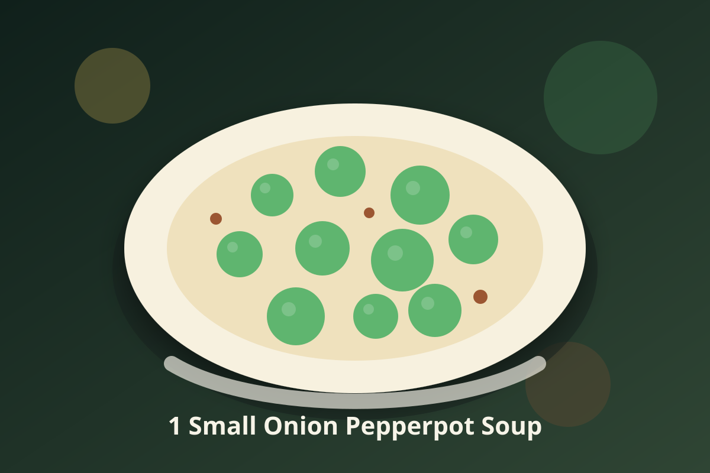
1 Small Onion Pepperpot Soup
A vegan pepperpot soup built around 1 small onion with appliance-friendly steps and Jamaican-inspired island seasoning.
Fresco recipe links
Open a recipe and use its public URL with compatible recipe importers.

A vegan pepperpot soup built around 1 small onion with appliance-friendly steps and Jamaican-inspired island seasoning.
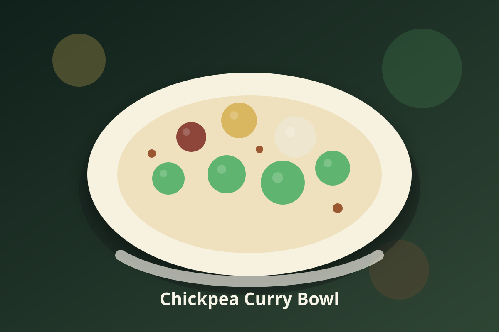
A vegan Jamaican staple built for weeknight cooking and appliance-friendly instructions.
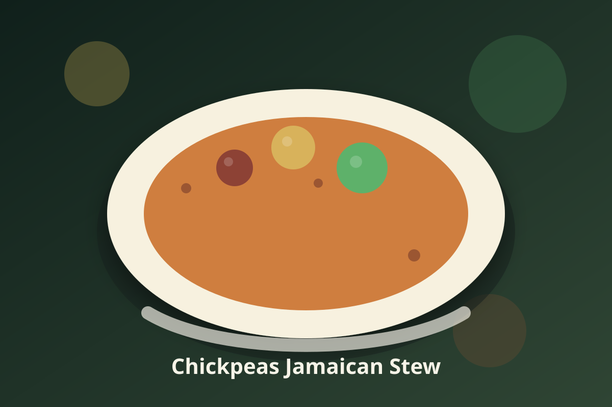
A savory vegan Jamaican-inspired stew with layered aromatics and a bright lime finish.
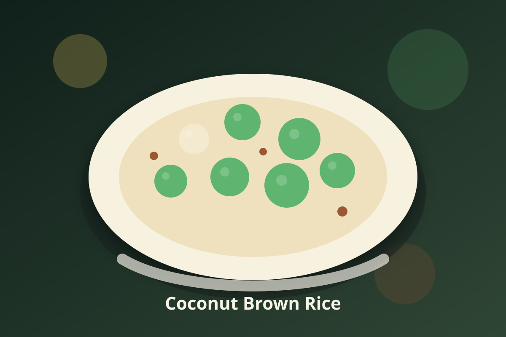
A vegan Jamaican staple built for weeknight cooking and appliance-friendly instructions.
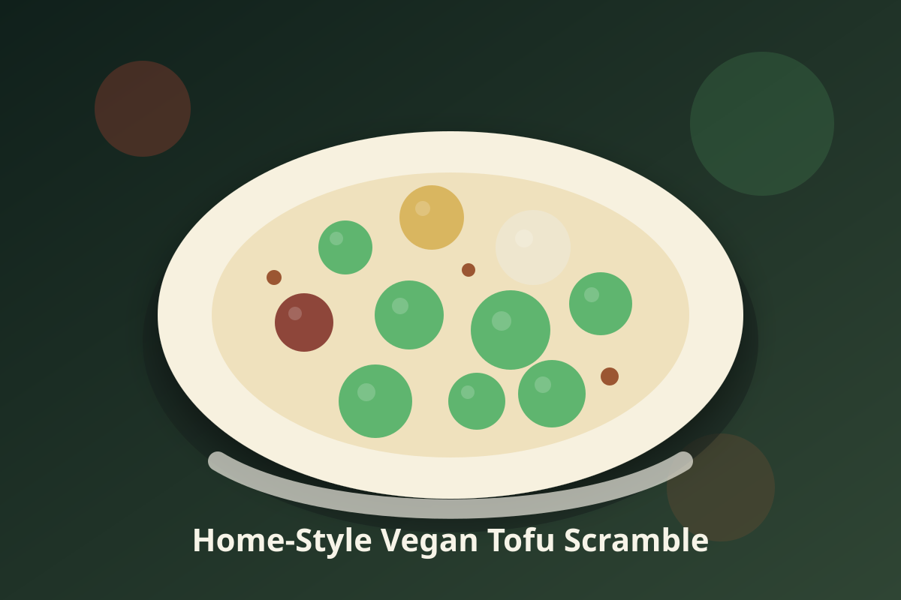
An original home-kitchen recipe inspired by Tofu Scramble, built around potatoes with the jamaican-inspired vegan comfort food feel and the qualities you liked: bold flavor and satisfying texture.

A vegan Jamaican staple built for weeknight cooking and appliance-friendly instructions.
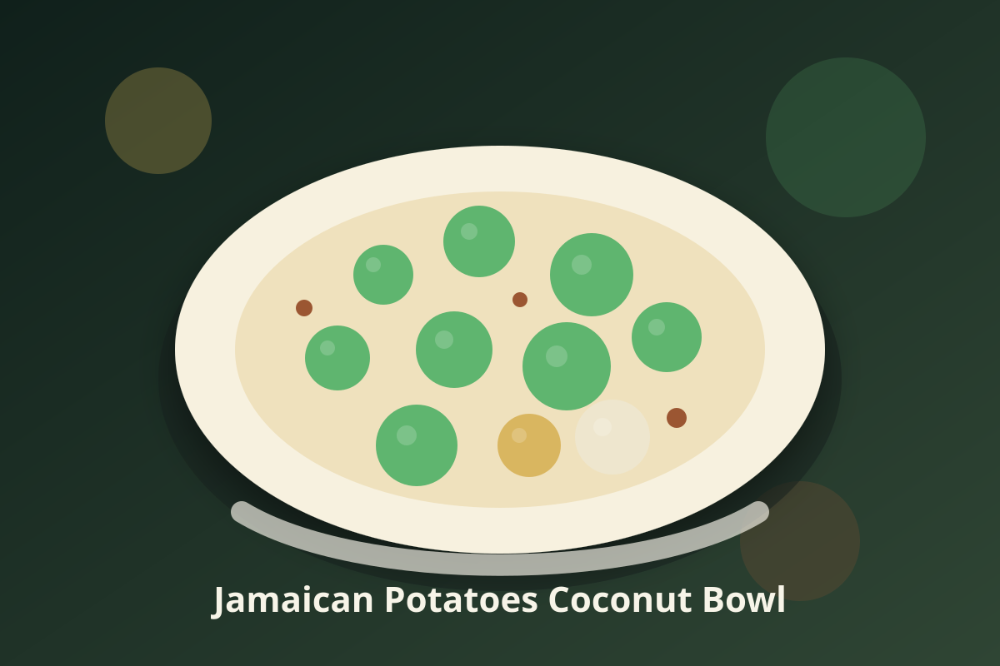
A vegan Jamaican recipe built around available ingredients and appliance-friendly cooking.
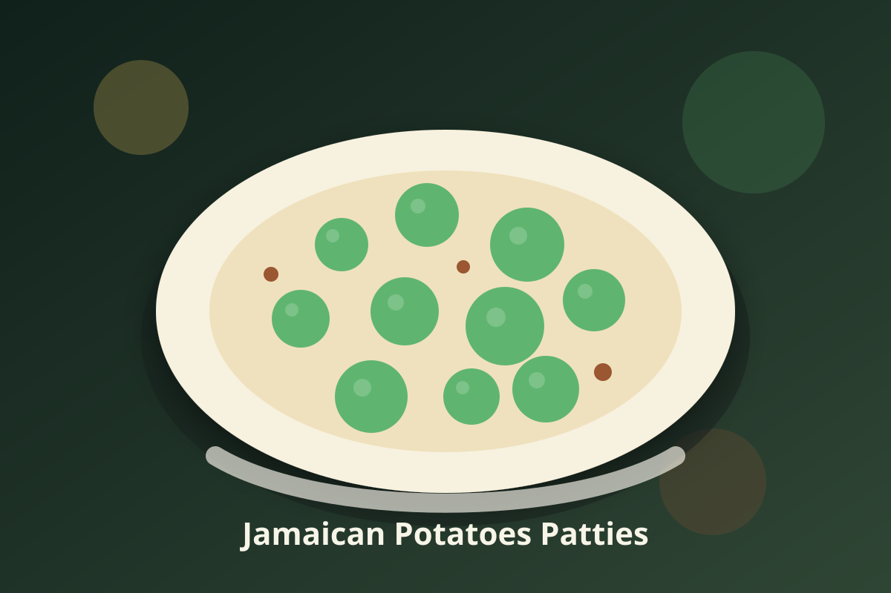
A vegan Jamaican patties built around potatoes with appliance-friendly steps and bright island seasoning.
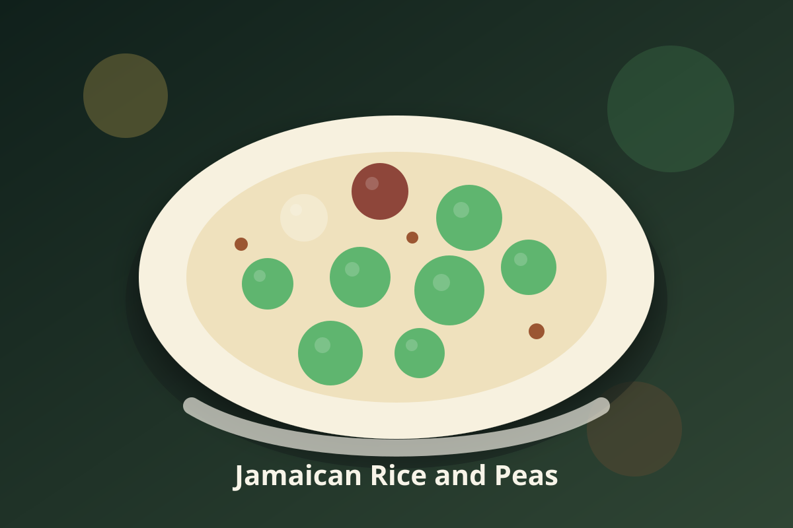
A vegan Jamaican staple built for weeknight cooking and appliance-friendly instructions.
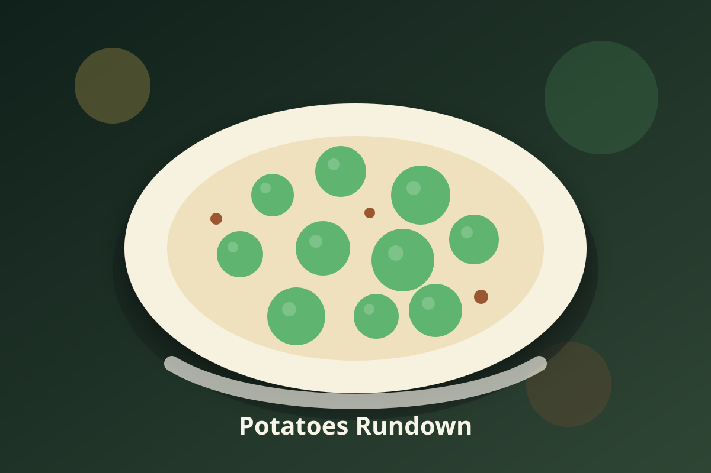
A vegan rundown built around potatoes with appliance-friendly steps and Jamaican-inspired island seasoning.
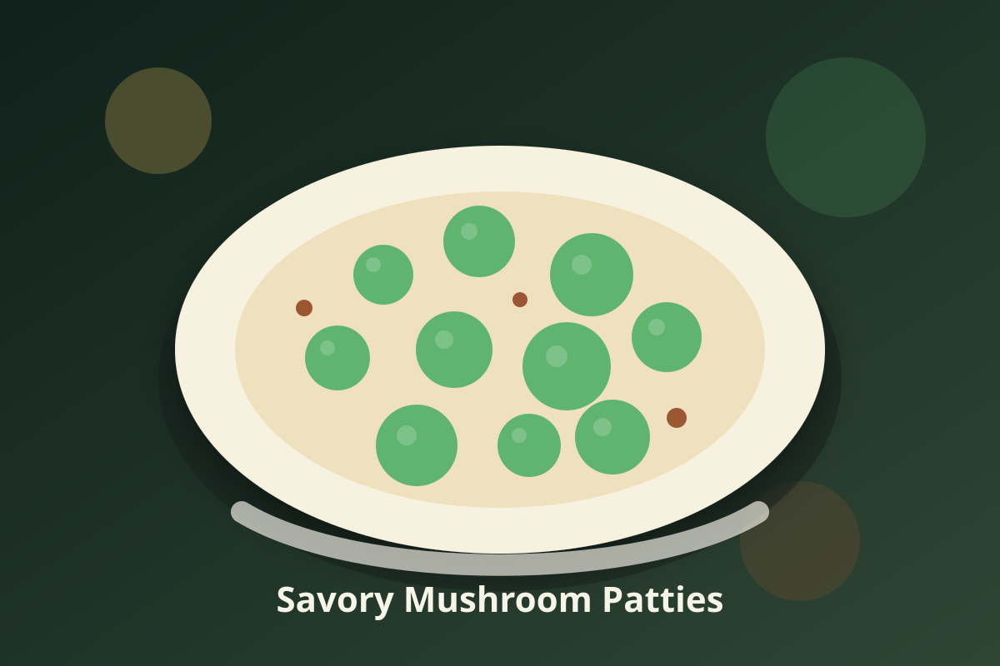
Savory vegan patties built around mushrooms with Jamaican-inspired island seasoning and complete appliance instructions.
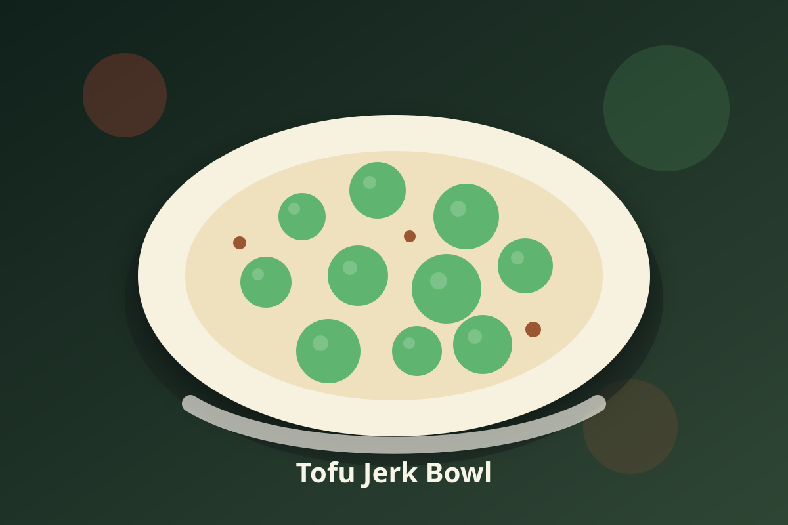
A vegan jerk bowl built around tofu with appliance-friendly steps and Jamaican-inspired island seasoning.

A vegan Jamaican staple built for weeknight cooking and appliance-friendly instructions.
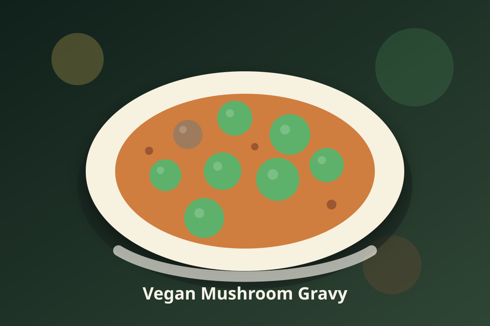
A vegan Jamaican staple built for weeknight cooking and appliance-friendly instructions.
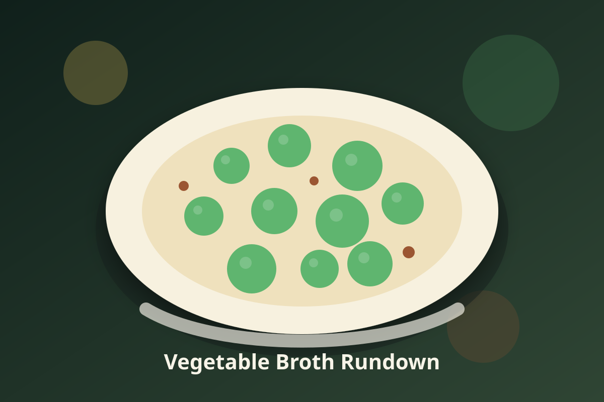
A vegan rundown built around 1 tablespoon coconut oil or vegetable broth with appliance-friendly steps and Jamaican-inspired island seasoning.
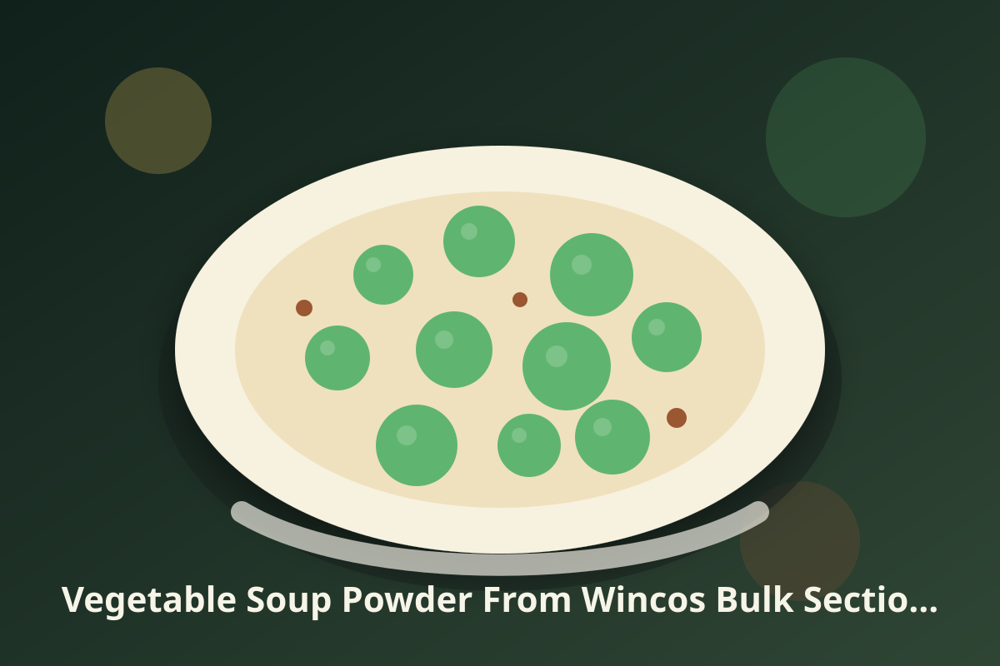
A vegan pepperpot soup built around vegetable soup powder from Wincos bulk section with appliance-friendly steps and Jamaican-inspired island seasoning.